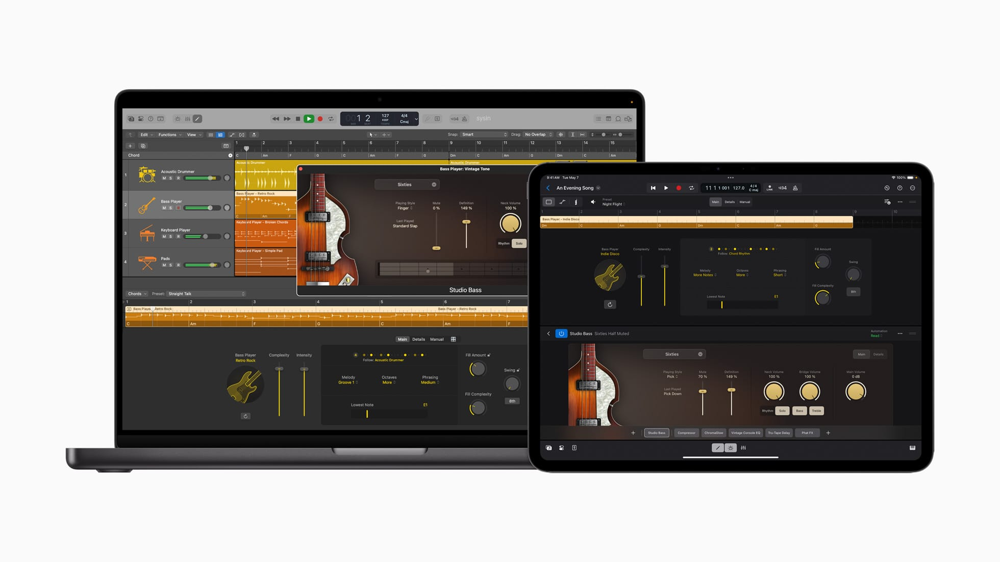

请访问原文链接：Apple Logic Pro 12.3.1 - 专业音乐制作 (音频编辑) 查看最新版。原创作品，转载请保留出处。
抄袭是最廉价的捷径，撑不起门面，也遮不住灵魂的不堪。本站的沉默不是默许，是给你留的最后一点体面。
作者主页：sysin.org
Logic Pro
妙想成声。
用 Logic Pro 在 Mac 和 iPad 上做音乐，感觉就是不同凡响。有丰富的乐器和效果供你取用，还有智能工具帮你创作节拍、谱曲和混音。无论创作还是剪辑音频，你都能大展音乐才华。

16 英寸 MacBook Pro 和 13 英寸 iPad Pro 屏幕均显示 Logic Pro。
全新 iPad 和 Mac 版 Logic Pro 带来突破性的音乐创作体验。
Mac 与 iPad 版 Logic Pro 面向 Apple Creator Studio 订阅用户及选择一次性购买 Mac 版 app 的用户推出一系列新功能，支持音乐艺术家并帮助创作者为视频内容配上原创音乐。这些强大、直观、智能的新工具为节拍制作、歌曲创作、混音等创意工作提供灵感。

Mac 与 iPad 版 Logic Pro 为音乐创作加速并提供灵感，助艺人和创作者打造原创歌曲和音频声轨。
Logic Pro
本领先声夺人，
创意一鸣惊人。

使用实时循环乐段，以全新方式进行音乐创作和即兴演奏。
借助采样器和快速采样器将声音转化为乐器 (sysin)。
通过步进音序器来快速制作鼓点节拍和旋律模式。
利用 Logic Remote 在 iPad 或 iPhone 上掌控乐曲的创作。
MainStage 插件和音效
MainStage 3
舞台音效，媲美录音室效果。
现在，将你的 Mac 变身现场演出装备。凭借不计其数的各种插件和音效选择，你可以让键盘、吉他或演唱表现令观众耳目一新，难以忘怀。
更新记录
Logic Pro 12.3，2026 年 7 月 1 日
新制作人项目 Shoulda Never
- 一窥格莱美获奖团队 Kehlani、Usher 和 Khris Riddick-Tynes 制作的热门歌曲《Shoulda Never》鲜为人知的 Logic Pro 项目幕后情况
Beat Breaker 增强功能
- 通过新的滤波器和声像模式以及随机化控制，探索玩转音频的更多方式
Alchemy 增强功能
- 通过粒子同步模式探索粒子合成中的新声音音色和质感
新声音包
- 通过 Granular Alchemy 声音包优化你的制作，它包含一系列围绕新 Grain Sync 模式设计的超凡脱俗声音
Logic Pro 12.2，2026 年 4 月 10 日
杜比全景声混音试听
- 导出可在 iPhone、iPad 或 Mac 上播放的轻量化可共享文件，以试听空间音频混音在 Apple Music 上流播放的效果
Step Reflex 内容包
准备好舞动起来吧！Step Reflex 的“现代车库”通过粗犷的重低音能量、沉浸式环境氛围和一点点电子舞曲魔力，让 90 年代/21 世纪初英国车库音乐的标志性声音焕发无暇光彩
无论是创作舞池颂歌还是内省律动 (sysin)，这一完整合集的强劲二步节拍、适合狂欢的合成器、深沉的低音声部和具有感染力的人声切片都能让你的音轨大放异彩
本更新包括稳定性提升和错误修复
Logic Pro 12.0，2026 年 1 月 29 日
AI 伴奏乐手
- 通过全新的合成器手变换轨道，并使用直观的控制创建键盘和贝斯演奏
- 生成可弹奏音符和控制乐器的动态合成器演奏
- 使用简单背景音为乐曲增加丰富的和声层次，或者通过调制背景音与节奏和弦增加动感和力度变化
- 探索流行的合成器贝斯风格（包括 808 贝斯、庞普贝斯和序列贝斯）以调整低音
- 使用和弦 ID 识别乐曲任意部分中的和弦 (sysin)，供伴奏乐手自动进行跟随
声音资源库
- 通过全新的声音资源库探索免费、内容持续增加的高级声音包合集
- 试听任意声音包的音频并安装喜爱的内容
- 轻松删除不再使用的声音包以释放储存空间
Logic Pro 11.2.2，2025 年 7 月 22 日
本更新包括稳定性提升和错误修复。
Logic Pro 11.2.1，2025 年 7 月 3 日
本更新包括稳定性提升和错误修复。
Logic Pro 11.2，2025 年 5 月 28 日
闪回采集
- 恢复及存储可能因 Logic 未设为录音状态而丢失的即兴演奏
- 启用循环模式即兴演奏多个分段，无需担心录音状态，Logic 可随后将这些分段找回并放入一个分段文件夹或多个新轨道
- 在几乎所有源（MIDI、音频或外部乐器）上使用“闪回采集”实时采集动态演奏
增强型大分轨拆分器
- 从音频录音拆分音频保真度更高的大分轨，现支持吉他和钢琴①
- 使用新的子混音功能创建自定义音频文件，如器乐或仅鼓与贝司
- 使用预置快速制作多组常用大分轨混音，如无伴奏合唱、器乐以及有人声的器乐等
Logic 注释板中的写作工具
- 使用 ChatGPT 及整合的写作工具探索歌词与和弦等灵感②
新声音包
- Dancefloor Rush 带来巅峰时期的鼓和贝司乐，其中包含硬击合成器和鼓
- Magnetic Imperfections 为每一个声音注入难以捉摸的魅力，唤醒模拟磁带未经修饰的灵魂
- Tosin Abasi 带来他的前卫金属吉他风格，包括精致的放大器和效果、独特的拨弦方式以及标志性的破碎即兴重复
搜索并选择
- 按名称或轨道编号搜索并选择轨道来轻松导览大项目
① 需要 M1 或后续芯片
② 需要 Apple 智能和 macOS 15.4，且 ChatGPT 扩展已启用
Logic Pro 11.1，2024 年 11 月 13 日
Quantec Room Simulator
- 访问唯一以插件形式重现的真实硬件，该插件使用 Quantec 创始人兼发明者 Wolfgang Buchleitner 的原始原理图、算法和代码而构建。
- 添加 Quantec QRS 和 Quantec Yardstick 硬件混响的传奇声音，二者可打造精准声学还原的空间模拟。
- 选择古典 Quantec QRS 为音乐添加自然的声学空间并保留其音色特征。
- 选取使用增强型空间模拟算法的 Quantec Yardstick，实现清晰度与细节皆有提升的更精准声学空间建模。
插件搜索
- 直接从插件菜单查找并添加任意插件。
- 使用“搜索并添加插件”键盘命令快速查找并添加插件，无需点按通道条插入。
- 按类别、公司名称甚至是插件名称的一部分来轻松进行搜索。
改进
- 拖移通道条来整理混音器布局。
- 直接将混音发送到“语音备忘录”并在 iPhone、iPad 或 Apple Watch 上试听。
- 按住 Command 键点按任意插件插槽以快速移除插件。
- 通过菜单内搜索快速设定输入、输出、侧链源或总线路由。
- 使用键盘命令朝任意方向移动选取框选择范围以加速编辑。
声音资源库
- 下载新的“模块化旋律”声音包并探索上百个由可 Patch 化硬件合成器打造的乐段以及一系列精心设计的 Alchemy 合成器 Patch。
Logic Pro 11.0, 2024 年 5 月 13 日
人工智能增强型工具
智能速度和音高修正插件中加入新的人工智能增强型工具，可进一步提升你的艺术技巧
- 鼓手迎来贝司手和键盘手的加入，组成了完整的伴奏乐手阵容。所有乐手均通过人工智能构建，可在你的指挥下轻松创建演奏
- 伴奏乐手可使用全局和弦轨道跟随同一和弦进行
- 通过 ChromaGlow 为任意轨道增添温暖感，这款高级插件包含五个饱和度模型，用于重现老式模拟硬件的声音①
- 通过大分轨拆分器将立体声音频文件分离成人声、鼓、贝司及其他声部的大分轨*
- iPad 版 Logic Pro 2 也加入了伴奏乐手、ChromaGlow 和大分轨拆分器，可轻松兼容在 Mac 版 Logic Pro 中创建的项目
声音资源库
- 录音室贝司包含六款深度采样的原声贝司和电贝司可供弹奏
- 录音室钢琴包含三款精细采样的钢琴可供演奏
- 包含和弦标记的乐段在添加到项目时会自动填充和弦轨道
- 三个全新制作人包可供使用：Hardwell、The Kount 和 Cory Wong
- Ellie Dixon 的原创多轨道项目“Swing!”以 App 内演示乐曲的形式提供
空间音频
- 降低混音和修剪选项允许对非全景声通道配置进行自定义混音
- 导出的 ADM BWF 文件可包含立体声及其他多通道格式的设置，兼容性优于杜比全景声
改进
- 原位并轨为外部乐器片段或通过 Logic 的 I/O 插件使用外部硬件的轨道增加了自动实时录音功能
- 支持的软件乐器和效果所生成的 MIDI 可发送至其他轨道的输入，以便在播放或录音期间进行创意性叠加
- 使用键盘命令更高效地进行编辑，包括移动、扩展选取框所选内容或调整其大小
① 需要 Apple M1 或后续芯片
下载地址
App Store：https://apps.apple.com/app/logic-pro-x/id634148309
CS App Store：https://apps.apple.com/app/logic-pro-make-music/id1615087040
Logic Pro X 10.3，系统要求 OS X 10.11 或更新版本
- 百度网盘链接：
[EoD]
Logic Pro X 10.4，系统要求 macOS 10.12 或更新版本
- 百度网盘链接：
[EoD]
Logic Pro X 10.5，系统要求 macOS 10.14.6 或更新版本
- 百度网盘链接：
[EoD]
Logic Pro 10.6 Universal + MainStage 3.5 Universal，系统要求 macOS 10.15.7 或更新版本
- 百度网盘链接：
[EoD]
Logic Pro 10.7 Universal + MainStage 3.6 Universal，系统要求 macOS 11.0 或更新版本
- 百度网盘链接：
[EoD]
Logic Pro 10.7.5 Universal + MainStage 3.6.2 Universal，系统要求 macOS 12.3 或更高版本
- 百度网盘链接：
[EoD]
Logic Pro 10.8 Universal + MainStage 3.6.5 Universal，系统要求 macOS 13.5 或更高版本
- 百度网盘链接：
[EoD]
Logic Pro 10.8.1 Universal + MainStage 3.6.6 Universal，系统要求 macOS 13.5 或更高版本
- 百度网盘链接：
[EoD]
Logic Pro 11.0.0 Universal，系统要求 macOS 13.5 或更高版本
- 百度网盘链接：
[EoD]
Logic Pro 11.1.0 Universal + MainStage 3.7.0 Universal，系统要求 macOS 14.4 或更高版本
- 百度网盘链接：
[EoD]
Logic Pro 11.2.0 Universal，系统要求 macOS 14.4 或更高版本
- 百度网盘链接：
[EoD]
Logic Pro 11.2.2 Universal，系统要求 macOS 14.4 或更高版本
- 百度网盘链接：
[EoD]
Logic Pro CS 12.0 ARM64 + MainStage 4.0 ARM64，系统要求 macOS 15.6 或更高版本（仅限搭载 Apple 芯片的 Mac）
- 百度网盘链接：
[EoD]
Logic Pro 12.2 Universal，系统要求 macOS 15.6 或更高版本
- 百度网盘链接：
[EoD]
Logic Pro CS 12.2 ARM64 + MainStage 4.2 ARM64，系统要求 macOS 15.6 或更高版本（仅限搭载 Apple 芯片的 Mac）
- 百度网盘链接：
[EoD]
Logic Pro 12.3 Universal，系统要求 macOS 15.6 或更高版本
- 百度网盘链接：
[EoD]
Logic Pro CS 12.3 ARM64 + MainStage 4.3 ARM64，系统要求 macOS 15.6 或更高版本（仅限搭载 Apple 芯片的 Mac）
- 百度网盘链接：
[EoD]
Logic Pro 12.3.1 Universal，系统要求 macOS 15.6 或更高版本
Logic Pro CS 12.3.1 ARM64 + MainStage 4.3.1 ARM64，系统要求 macOS 15.6 或更高版本（仅限搭载 Apple 芯片的 Mac）

文章用于推荐和分享优秀的软件产品及其相关技术，所有软件提供免费版或试用版。内容若侵犯了您的版权，请联系作者删除。如果您喜欢这篇文章，或者觉得它对您有所帮助，亦或发现有不当之处；欢迎发表评论，也欢迎分享这个网站，或者赞赏一下，谢谢！提示：捐赠或赞赏属于自愿赠予行为，提交后即表示您对作者的支持与认可。为避免误操作，请在确认前仔细检查金额，支付完成后将无法撤销或退还。
 支付宝赞赏
支付宝赞赏  微信赞赏
微信赞赏赞赏一下
敬请注册！点击 “登录” - “用户注册”（已知不支持 21.cn/189.cn 邮箱）。 请勿使用联合登录（已关闭）。